- 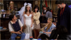s01e1- "The Pilot"
Monica and the gang introduce Rachel to the "real world" after she leaves her fiancé at the altar. Ross struggles with his rediscovered feelings for Rachel.
- s01e2 - "The One With The Sonogram At The End" 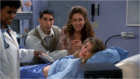
Ross finds out his estranged lesbian wife and her life partner are going to have his baby.
- s01e3 - "The One With The Thumb" 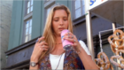
Phoebe discovers a human thumb floating in her can of soda and gets compensation of $7,000. Chandler starts smoking again.
- s01e4 - "The One With George Stephanopoulos" 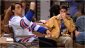
The girls spy on the sexy politician across the street, while the guys go to a hockey game.
- s01e5 - "The One With German Laundry Detergent" 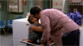
Ross and Rachel wash their laundry together. Joey takes Monica on a fake double date in an attempt to reunite with his ex
- s01e6 - "The One With The Butt" 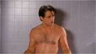
Joey finally gets a film role: Al Pacino's butt double. Chandler dates a woman who already has both a husband and a boyfriend.
- s01e7 - "The One With The Blackout" 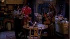
During a power outage, Rachel falls for the owner of a lost kitten, a Italian guy, much to Ross's chagrin. Meanwhile, Chandler is trapped in an automated-teller vestibule with a gorgeous model.
- s01e8 - "The One Where Nana Dies Twice" 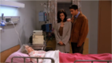
Ross and Monica go to the bedside of their dead grandmother, who momentarily returns to life. Chandler questions his sexual persona when a collegue wants to arrange a date for him with another guy.
- s01e9 - "The One Where Underdog Gets Away" 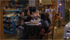
Monica plans a lovely, quiet Thanksgiving feast in her apartment but her plans go awry. Joey appears on medical posters. Rachel plans to go skiing with her family.
- s01e10 - "The One With The Monkey" 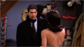
Ross arrives at the New Year's Eve party with his new companion, a monkey named Marcel, who is more compatible with the group than he is.
- s01e11 - "The One With Mrs. Bing" 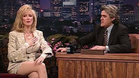
Chandler's flamboyant romance-novelist mother comes to New York for a visit. Monica and Phoebe cause a traffic accident.
- s01e12 - "The One With The Dozen Lasagnas" 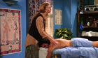
Rachel's Italian boyfriend Paolo hits on Phoebe in the massage parlor.
- s01e13 - "The One With The Boobies" 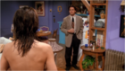
Chandler sees Rachel naked. Joey learns that his father is having an affair with a pet mortician,but his mother already knew.
- s01e14 - "The One With The Candy Hearts" 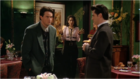
The girls rebel against Valentine's Day by burning mementos from past relationships. Chandler reunites with an old flame.
- s01e15 - "The One With The Stoned Guy" 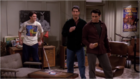
Ross asks Joey for advice on how to talk dirty to women. Monica interviews for a chef's position, but the owner shows up stoned.
- s01e16 - "The One With Two Parts, Part 1" 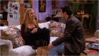
Phoebe's twin sister causes confusion and conflict when Joey is attracted to her.
- s01e17 - "The One With Two Parts, Part 2" 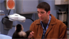
Monica and Rachel squabble over two handsome doctors
- s01e18 - "The One With All The Poker" 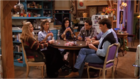
The girls lose money in a poker game with the boys. After getting advice from Monica's aunt, they demand a rematch.
- s01e19 - "The One Where The Monkey Gets Away" 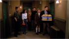
Rachel accidentally lets Ross's pet monkey escape and a search party forms. Then she discovers that her old best friend Mindy is engaged to marry her ex-fiance.
- s01e20 - "The One With The Evil Orthodontist" 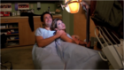
Rachel has a brief encounter with her ex-fiance. Riddled with guilt, she decides to confess her evil sins only to discover that Mindy's been busier than she's let on.
- s01e21 - "The One With The Fake Monica" 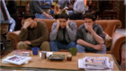
Monica meets her identity thief, who helps her live out her fantasies. Ross's monkey becomes sexually mature and drives everyone crazy.
- s01e22 - "The One With The Ick Factor" 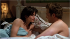
Monica discovers that she is a cradle snatcher. Ross's ex-wife begins giving birth.
- s01e23 - "The One With The Birth" 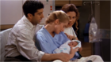
The baby is born, bringing adoration from everyone.
- s01e24 - "The One Where Rachel Finds Out" 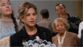
Rachel finds out about Ross's love for her while he is working in China. However, another surprise awaits her as she heads to the airport to meet him.